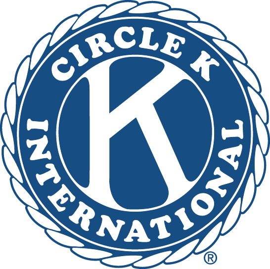

 at the University of Texas at Austin
UT CKI starts off the year strong with a great first meeting! We had many new people attend, including some previous Key Club members as well as people completely new to the Kiwanis Family! After the meeting, we also made dog toys out of old t-shirts for local animal shelters.
CKI partnered up with the UT chapter of Eliminate to put on a Dodgeball tournamnet to fundraiser for our partner charity The Eliminate Project! We had 8 teams participate and even had one of our CKI teams come out on top!
The CKI family celebrated the end of the semester and holiday season together. We had a toy drive for Orange Santa, enjoyed holiday cookies, and laughed at each other's ugly sweaters!
We traveled to Latham Springs Retreat Center to join in fellowship with all CKI chapters in the Texas-Oklahoma District. We participated in leadership workshops, played team-building games, did various service projects, and had way too many smores! Even with some rain, it was a weekend well-spent on service and making friends.